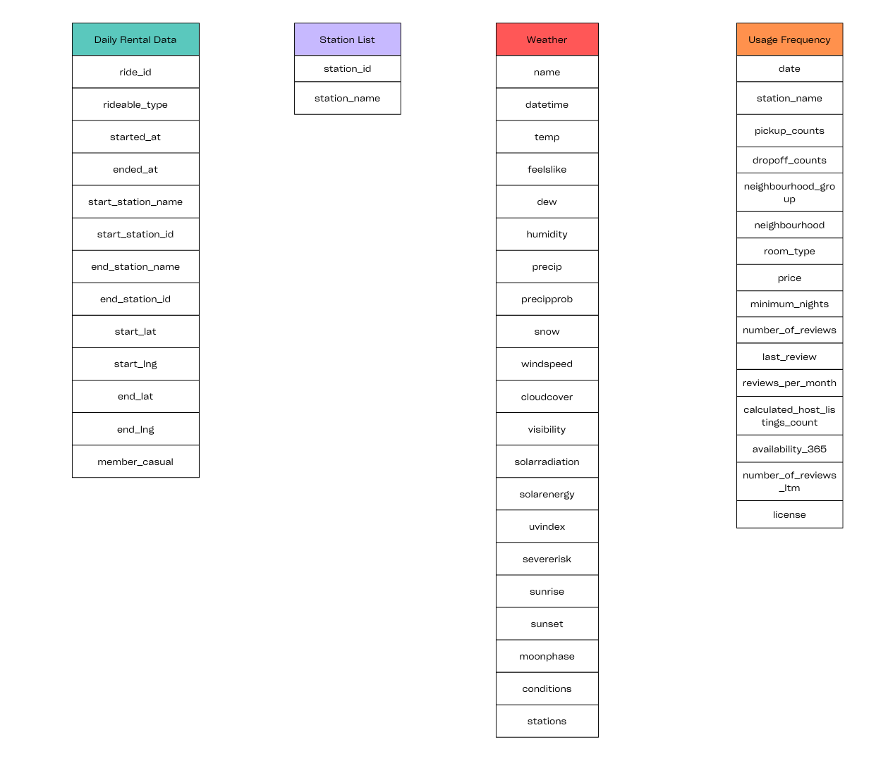
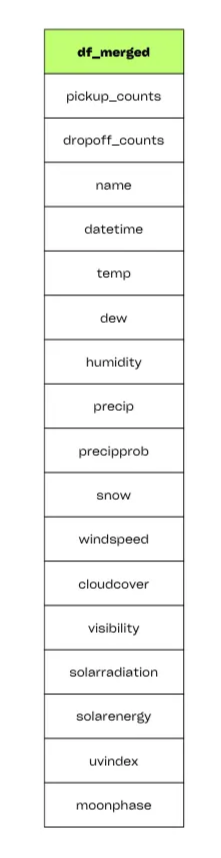
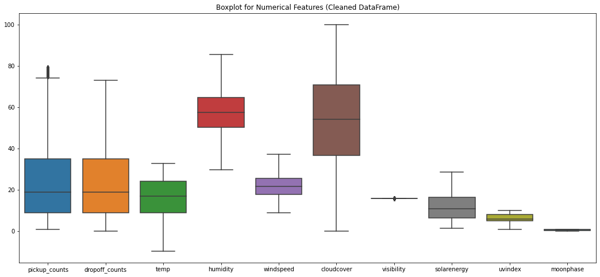
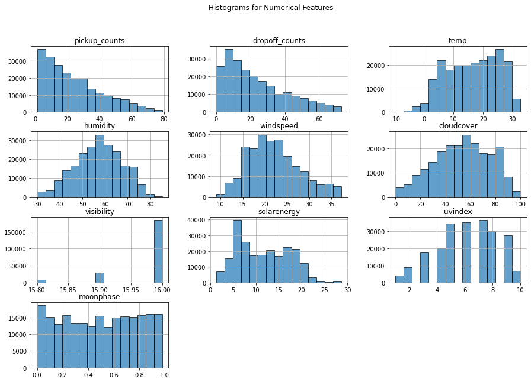
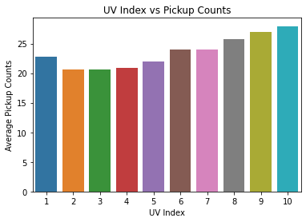
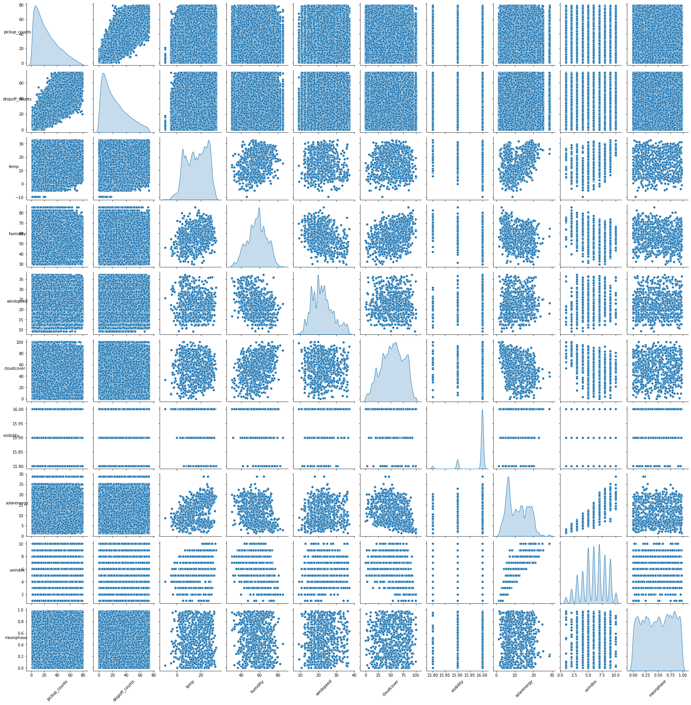

Capital Bike Sharing Prediction
TRANSPORTATION

Project Background
The rise of urban cycling has led to a growing reliance on bike-sharing services as sustainable alternatives to traditional transport modes. Capital Bikeshare is a popular bike-sharing service that provides detailed data on user rides and weather conditions. With such rich data understanding user behavior, station activity and weather influences on ride demand becomes vital for efficient system management. This project uses data from Capital Bikeshare, spanning from May 2020 to August 2024, and weather data from Visual Crossing to explore and analyze trends, predict demand and optimize resource allocation. This project uses data from Capital Bikeshare, spanning from May 2020 to August 2024 and weather data from Visual Crossing to explore and analyze trends, predict demand, and optimize resource allocation.
Problem Statement:
Efficient management of bike-sharing services requires predicting demand and understanding patterns influenced by factors such as weather, user types members vs. casual users and station usage. Inefficient predictions can lead to resource misallocation causing station overcrowding unavailability of bikes or underutilization of resources.
Objective:
- Visualize and analyze ride trends based on user type, rideable types, weather affecting users and station activity.
- Build a model to forecast daily bike demand pickups against weather and historical data.
- Provide actionable insights into improving station management and enhancing user satisfaction through optimized bike distribution.
Contribution:
- By analyzing weather data alongside pickup counts the project identifies key factors influencing ride demand helping to optimize bike availability and improve the user experience.
- Additionally the predictive model enables accurate demand forecasting supporting proactive resource allocation to reduce station overcrowding minimize bike shortages and enhance operational efficiency.
Scope:
- Temporal Scope: Analysis spans over four years of data focusing on long-term trends and seasonal demand patterns.
- Spatial Scope: Covers all stations in the Capital Bikeshare network providing localized insights for station management.
- Modeling: Demonstrates how weather significantly influences bike-sharing demand and shows potential for broader application in similar urban bike-sharing systems.
Code:

Data Structure & Model View:

After Merging Two Data Files The Final Dataframe is

Performed Cleaning and Merging Files
(Please see the above code where I had explained in detailed)
EDA:

- pickup_counts have some visible outliers above the upper whisker indicating a few unusually high values
- windspeed and solarenergy also show mild outliers above the upper range.
- The central tendency of humidity is relatively high around 60% with a consistent range.
- cloudcover has a wide range indicating high variability with data spread from near 0 to almost 100.
- visibility has a very narrow range suggesting minimal variation across the data.
- uvindex and moonphase also show limited variability.

- Several features like pickup counts, dropoff counts and solar energy show right-skewed distributions meaning values are concentrated at the lower end.
- Features like humidity and visibility follow a normal distribution indicating most values center around a specific range.
- Temperature and UV Index show peaks at multiple points hinting at multi-modal distributions.

- For the 0-10°C range the average pickup count is approximately 21.
- For the 10-20°C range the average pickup count increases to about 25.
- The 20-30°C range shows the highest pickup counts close to 26.
- The 30-40°C range remains high similar to the 20-30°C range about 26.
- Pickup counts tend to increase with rising temperatures, peaking between 20-40°C.
- There is no information for very high-temperature ranges (40°C and above).

- The average pickup counts are lowest for UV Index values 2, 3 and 4 (around 20 counts).
- As the UV Index increases, the pickup counts also increase.
- UV Index values 9 and 10 show the highest pickup counts exceeding 26.
- Pickup counts increase steadily with rising UV Index levels.
- A positive correlation exists between UV Index and pickup counts.

- Pickup Counts and Dropoff Counts are highly correlated.
- Temperature and UV Index show some influence on pickup counts.
- Solar Energy and Cloud Cover impact humidity but show limited effects on pickup/dropoff counts.
- Most variables have weak to no correlation as scatter plots are widely spread without trends
Top 3 Months in a Year where Bike Pickup Counts are more
| Year | Months | Bike Pickups |
|---|---|---|
| 2024 | 3 | 375 |
| 2024 | 5 | 260 |
| 2024 | 6 | 249 |
| 2023 | 3 | 444 |
| 2023 | 7 | 270 |
| 2023 | 6 | 257 |
| 2022 | 7 | 377 |
| 2022 | 3 | 293 |
| 2022 | 5 | 283 |
| 2021 | 4 | 357 |
| 2021 | 7 | 349 |
| 2021 | 5 | 281 |
| 2020 | 6 | 439 |
| 2020 | 9 | 253 |
| 2020 | 10 | 243 |
Further Implemented Machine Learning Algorithms:
- Linear Regression Model
- Lasso Regression Model
- Ridge Regression Model
- Elastic Net Model
Conclusion:
The regression models performed well with an R2 of 0.88 and low error metrics (RMSE: 6.13, MAE: 4.40, MSE: 37.6) after tuning. All models including Linear, Lasso, Ridge, and Elastic Net, showed minimal improvements through hyperparameter tuning. Ridge and Elastic Net performed slightly better suggesting that regularization helped handle feature relationships effectively. The models are suitable for accurate predictions in this regression problem.